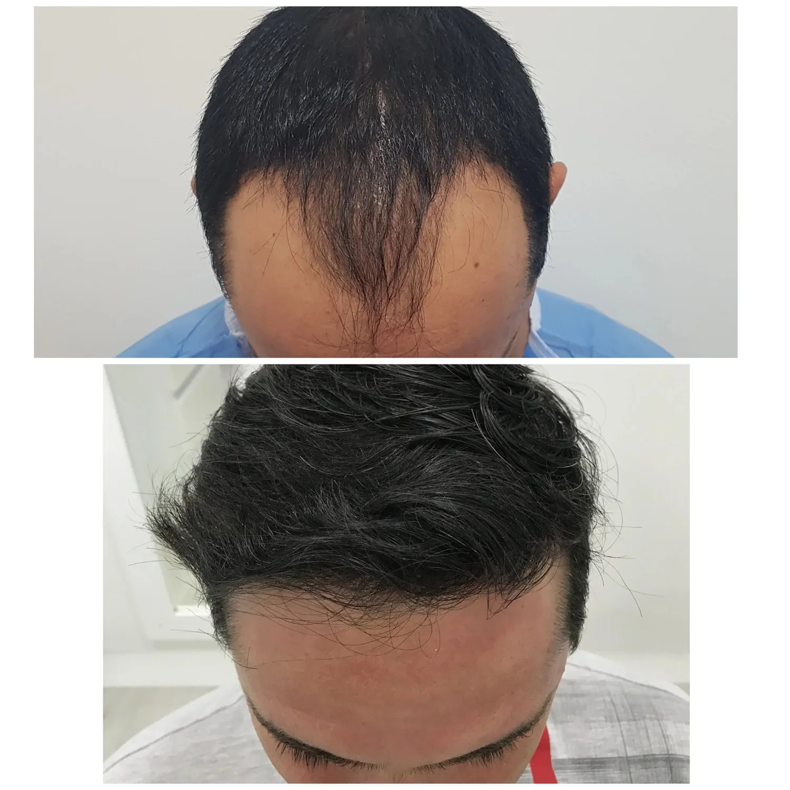

YOUR CLINICAL CONVERSATION
Plastic surgery
Explore facial, breast and body procedures through a personalised assessment.

Plastic surgery and hair restoration with an international-patient pathway. Discover Dr. Héctor J. García’s practice in the Bucaramanga metropolitan area.
Explore facial, breast and body procedures through a personalised assessment.
Begin with a professional conversation about assessment, options and follow-up.

The practice presents bilingual assistance and travel coordination. Use this illustrative checklist to understand the conversations to have with the team.
This list is a planning demo, not medical clearance or a travel reservation.
Dr. Héctor J. García presents plastic surgery and hair restoration. His international-patient information includes bilingual assistance, accommodation and transport coordination. Travel plans must be confirmed with the team.
Official practice website ↗Clínica Ardila Lülle · Torre B, piso 11 · Consultorio 1101 · Floridablanca, área metropolitana de Bucaramanga
Booking preview · no real appointment is reserved.
Clínica Ardila Lülle · Torre B, piso 11 · Consultorio 1101 · Floridablanca, área metropolitana de Bucaramanga
WhatsApp +573203214542 ↗Official practice website ↗